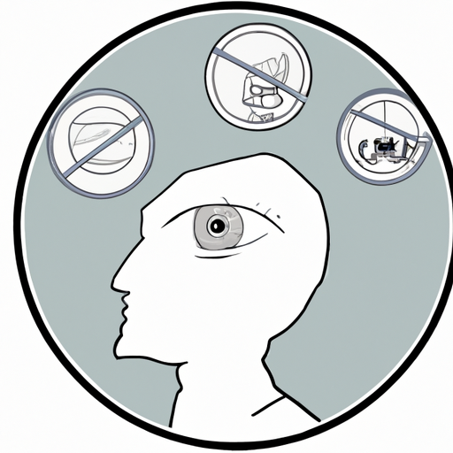

Sztuczna inteligencja to dziedzina nauki i technologii zajmująca się tworzeniem maszyn i programów zdolnych do wykonywania zadań wymagających ludzkiej inteligencji, takich jak uczenie się, rozumienie języka naturalnego i podejmowanie decyzji. AI stała się integralną częścią naszego codziennego życia, od asystentów głosowych w smartfonach, jak Siri czy Google Assistant, po systemy rekomendacyjne na platformach streamingowych, takich jak Netflix czy Spotify. Wspiera nas w planowaniu tras, automatyzacji domowych urządzeń oraz w komunikacji. Obecnie jest o niej bardzo głośno choćby za sprawą dużych modeli językowych, jak ChatGPT.
Rozwój uczenia maszynowego i głębokiego uczenia umożliwił tworzenie zaawansowanych modeli, które potrafią samodzielnie rozwiązywać skomplikowane problemy. Sieci neuronowe analizują ogromne ilości danych w obszarach takich jak rozpoznawanie obrazów czy przetwarzanie języka naturalnego. Dzięki temu AI nie tylko przetwarza dane, ale także podejmuje decyzje, wcześniej zarezerwowane dla ludzi.
Podpis pod obrazem: Ilustracja przedstawiająca wpływ sztucznej inteligencji w codziennym życiu.
Kluczowym wyzwaniem jest zapewnienie etycznego i odpowiedzialnego rozwoju AI. Należy zwracać uwagę na uprzedzenia w danych treningowych, które mogą prowadzić do dyskryminacji, oraz na wpływ AI na prywatność i nierówności społeczne. Ważne jest opracowanie ram etycznych i mechanizmów nadzoru regulujących rozwój i wdrażanie AI, a także włączanie różnych grup społecznych w ten proces. Transparentność działań firm i instytucji może pomóc w budowaniu zaufania do technologii.
Podpis pod obrazem: Ilustracja ukazująca wyzwania etyczne i społeczne związane z rozwojem sztucznej inteligencji.
Badacze pracują nad rozwiązaniami umożliwiającymi harmonijne współistnienie ludzi i AI, koncentrując się na tworzeniu systemów wspierających człowieka, a nie go zastępujących. Istotne jest opracowywanie mechanizmów współpracy między człowiekiem a maszyną, co sprzyja synergii i skutecznej komunikacji.
Automatyzacja procesów dzięki AI przynosi korzyści w postaci zwiększonej efektywności i redukcji kosztów. Jednak istnieją obawy dotyczące wpływu na rynek pracy i potencjalnego zastąpienia ludzi przez maszyny. Kluczowe jest przemyślane podejście do transformacji rynku pracy, inwestycja w edukację i przekwalifikowanie pracowników, aby mogli oni znaleźć nowe role w gospodarce przyszłości.

Podpis pod obrazem: Ilustracja przedstawiająca automatyzację procesów dzięki wykorzystaniu sztucznej inteligencji.
Specjaliści powinni być gotowi na ciągłe doskonalenie swoich umiejętności, ucząc się między innymi zasad działania algorytmów AI. Przyszłość pracy będzie wymagać nie tylko umiejętności technicznych, ale także kompetencji miękkich, takich jak kreatywność i zdolność rozwiązywania problemów.
Nasza zdolność do adaptacji i innowacji zdecyduje o tym, jak AI wpłynie na przyszłość ludzkości. Wspólnie możemy kształtować tę przyszłość, wykorzystując AI dla dobra wszystkich.